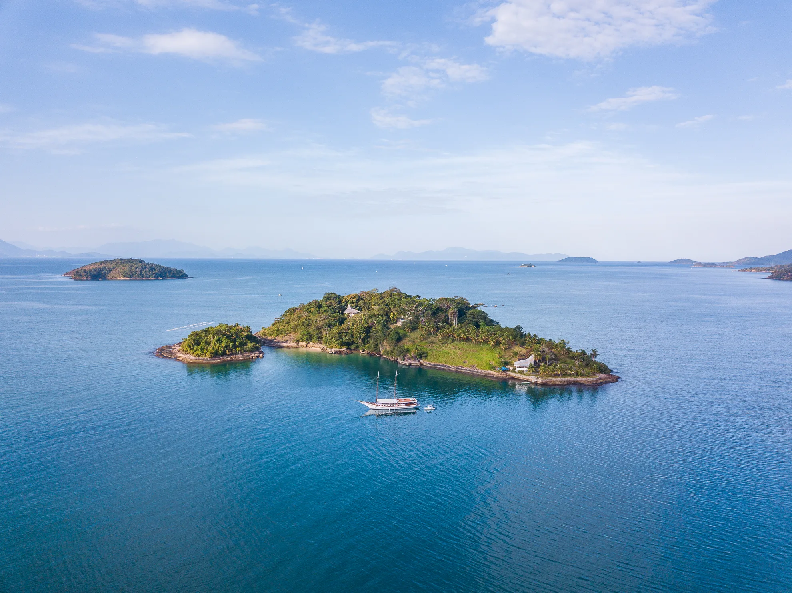
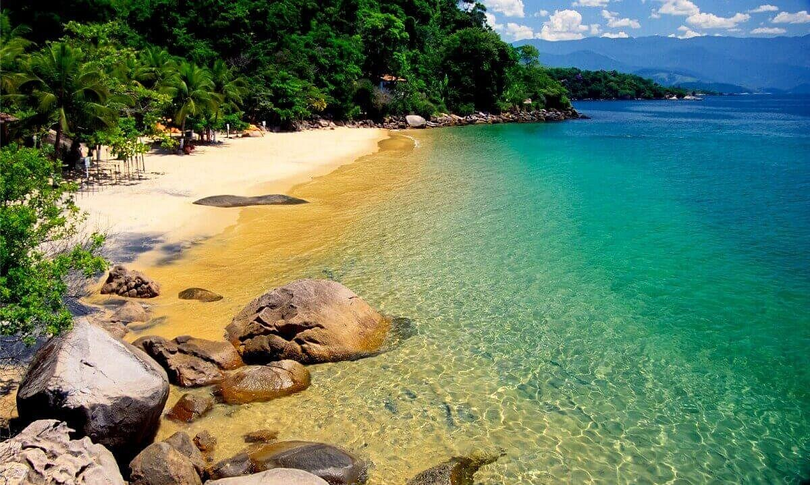
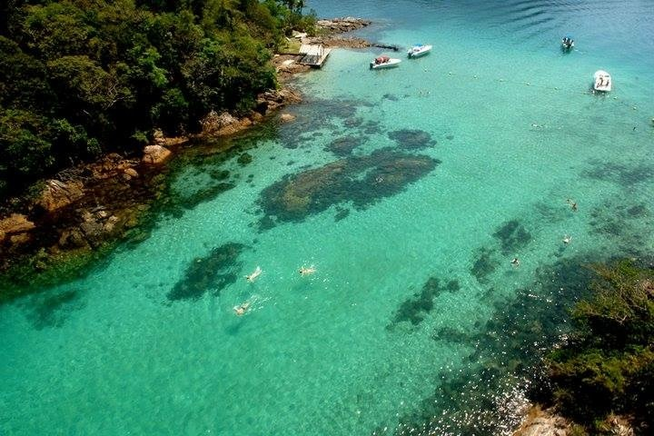
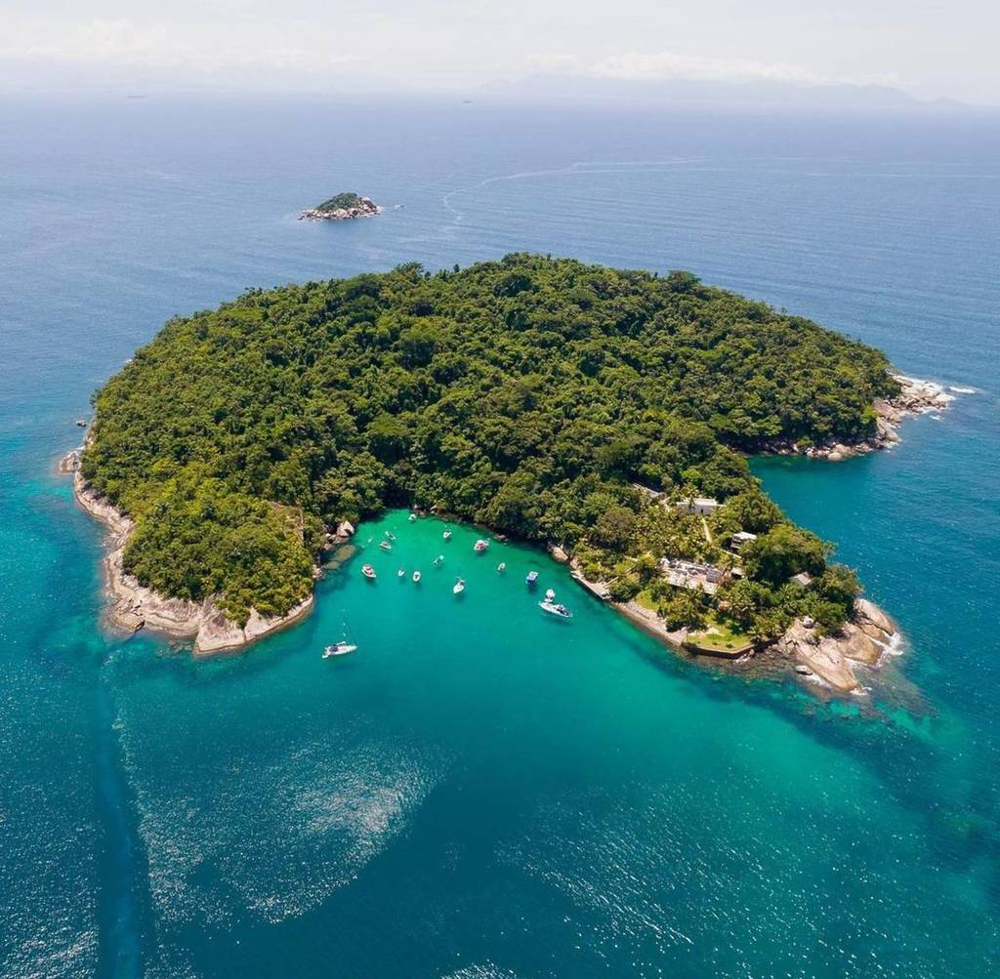
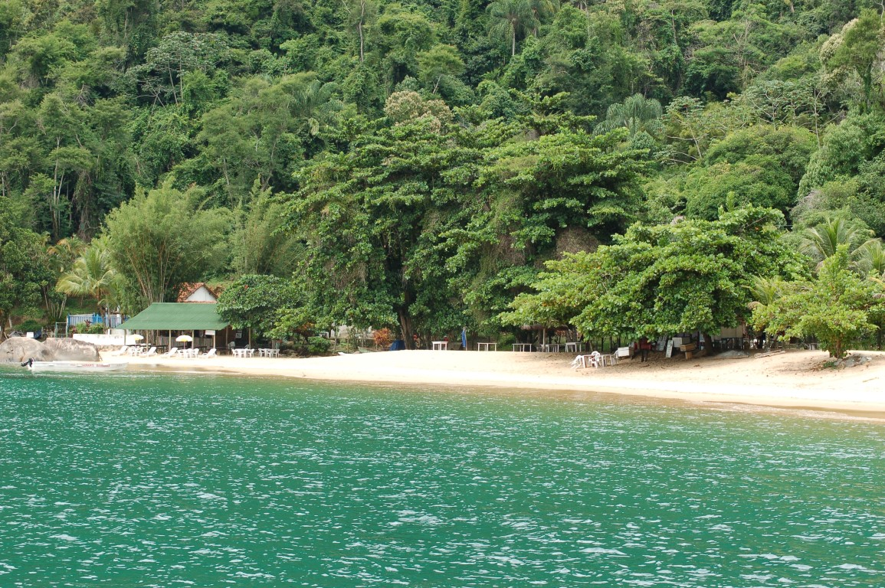
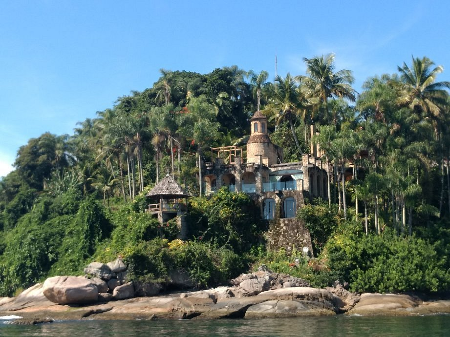

PARADA 01 · ~10h30
Ilha Comprida
Aquário natural raso onde cardumes coloridos passam entre as pernas. Snorkel para iniciantes — primeira parada para quem nunca fez.
Seis paradas. Seis horas. Saída às 10h do centro histórico de Paraty. Cada parada tem propósito — nadar, mergulhar, almoçar, contemplar. Sem pressa.
Cada pino é uma parada real do nosso roteiro. Passe o cursor em um número para ver 4 imagens daquele local. Use o mapa do Google ao fundo para navegar, dar zoom e abrir em rota.

Aquário natural raso onde cardumes coloridos passam entre as pernas. Snorkel para iniciantes — primeira parada para quem nunca fez.

Areia branca, águas calmas, sem ondas. A parada de banho de mar tradicional — bom para quem viaja com crianças pequenas.

A parada favorita. Águas mais transparentes da baía. Mergulho demorado, fotos subaquáticas, tempo para tudo.

Águas limpas, encontros com tartarugas marinhas (sazonal), coqueirais — área de natureza preservada.

Almoço servido a bordo com Menu do Chef caiçara — peixe fresco, banana da terra, taioba. Vista para a praia.

Castelo histórico em meio a palmeiras imperiais — encerramos o passeio em um cenário cinematográfico.
Embarque 10h · retorno 16h. Chegue 15 minutos antes. Tolerância máxima: 15 minutos.
6 horas de navegação efetiva, com paradas variando de 30 a 75 minutos cada.
Centro Histórico de Paraty / RJ. O endereço exato do cais e as orientações de chegada chegam por WhatsApp após a confirmação da reserva.
Até 5 anos gratuito. De 6 a 10, meia-entrada. Coletes infantis disponíveis a bordo.
Em caso de impeditivo meteorológico (decisão da Marinha), remarcação sem custo para outra data.
Reserva confirmada com sinal · Pix, cartão ou transferência. Saldo combinado na confirmação.
Acesso ao deck superior reservado, espreguiçadeiras dedicadas, cortesia de duas taças de espumante por pessoa e atendimento priorizado no bar. Ambiente mais reservado, vista privilegiada.
Reserve a suíte com hidromassagem privativa por sessão de 1 hora. Banheira aquecida com vista para o mar, atendimento exclusivo, opção de massagem (sob agendamento).
Salão interno com ar-condicionado, ideal para crianças e idosos nos dias quentes.
Conexão de cortesia funcionando em todas as áreas da escuna durante o passeio.
Escorrega diretamente do deck para a água — diversão garantida para todas as idades.
Embarcação auxiliar para chegar até praias rasas e dar suporte às atividades.
Máscaras, snorkels e nadadeiras de todos os tamanhos disponíveis sem custo extra.
Cobertura completa, fotos editadas digitalmente em até 7 dias. Opcional, sob reserva.
Toda navegação obedece protocolos da Marinha. Em condições impeditivas, o passeio é remarcado sem custo.
Comandante, marinheiros e auxiliares com cursos de salvatagem e atendimento de emergência atualizados.
Coletes salva-vidas dimensionados para adultos, crianças e bebês. Disponíveis no embarque.
Crianças até 5 anos não pagam. De 6 a 10, meia-entrada. A partir de 11, valor integral.
Operamos diariamente. Recomendamos reservar com pelo menos 7 dias de antecedência — finais de semana e feriados costumam esgotar.